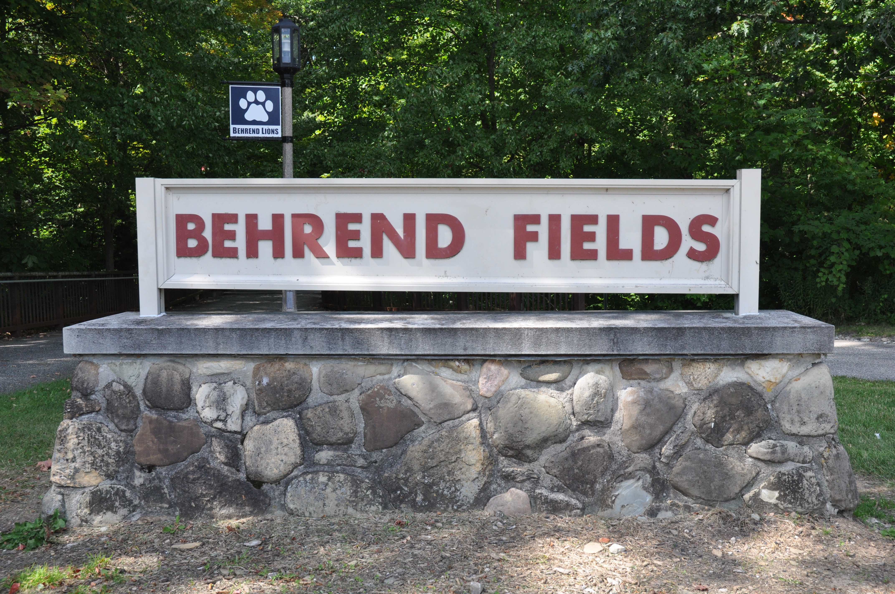
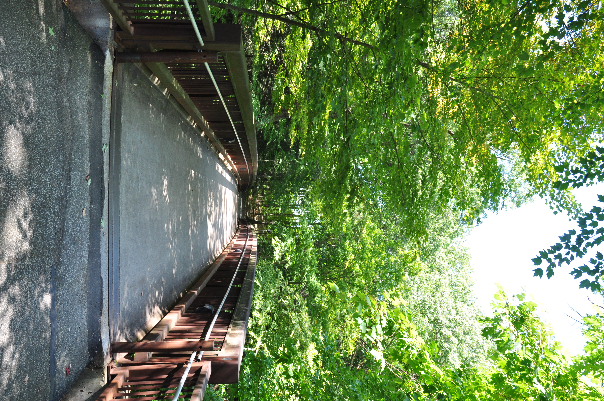
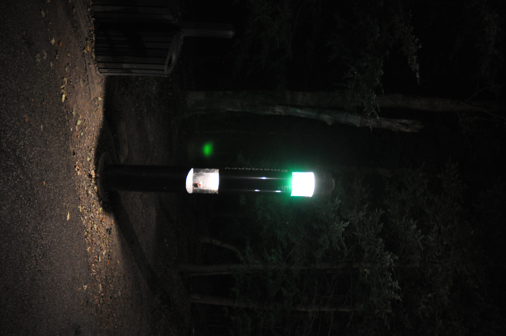
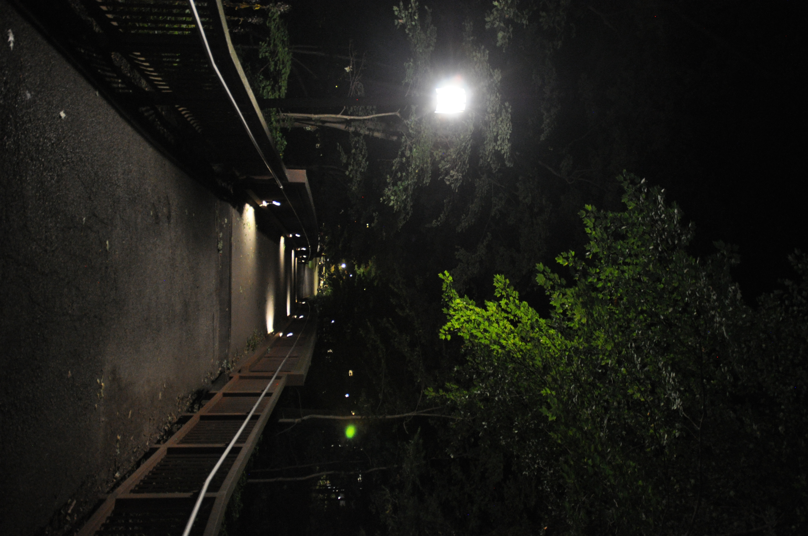

For this series of photos, I want them to feel like a day in Behrend Fields. It will be a quiet journey that empathizes the great parts of the fields.
The photos I took during the day show the open, peaceful side of Behrend Fields. The sun's beams bring an alive and welcoming feeling.


As night comes, it brings a sense of danger. The places we see in the day are threatening at night.

